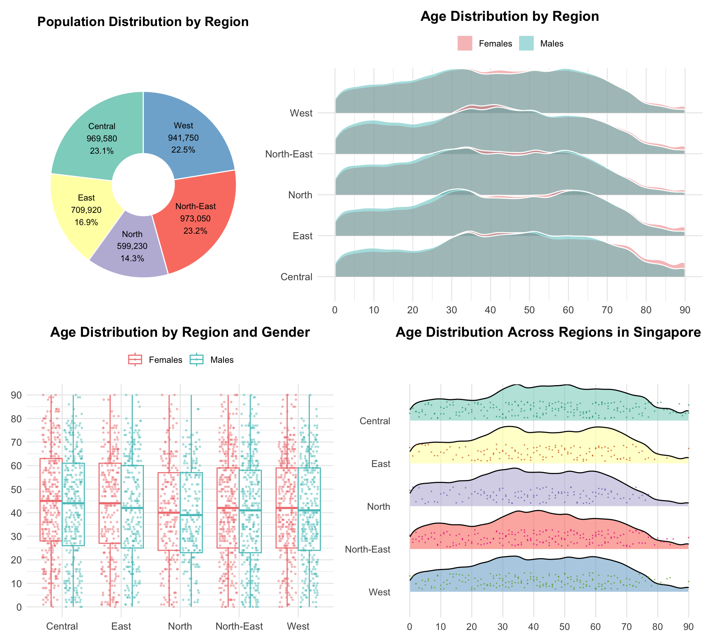

pacman::p_load(ggrepel, patchwork,
ggthemes, hrbrthemes,
tidyverse, ggdist, ggridges, forcats, viridis, scales
) Take-home Exercise 1
1 Overview
1.1 Setting the scene
A local online media company that publishes daily content on digital platforms is planning to release an article in 2024 focusing on the population structure and distribution of Singapore. The number of resident population is a key indicator in understanding population structure, as it helps analyze aspects such as age composition, gender ratio, regional population density, and developmental disparities. This study aims to explore the differences in Singapore’s population structure and distribution through the organization and visual representation of such data.
1.2 Objectives
As a graphical editor of a median company, I conduct exploratory data analysis and visualize the data from the following three aspects:
Age Group Composition across Planning Areas
Identify spatial disparities in youth, middle-aged, and elderly population distribution to reveal areas with aging or younger communities.
Gender Distribution and Elderly Gender Imbalance
Explore male-female ratios and highlight significant gender differences in the elderly population across planning areas.
Regional Demographics by Age and Gender
Compare age and gender structures across five major regions to uncover regional demographic trends and planning implications.
2 Data pre-processing & data exploration
2.1 Dataset Overview
The dataset used for this analysis is “Singapore Resident Population by Planning Area/Subzone, Single Year of Age and Sex, June 2024,” published by the Singapore Department of Statistics (DOS) on https://www.singstat.gov.sg. The data covers all planning areas and subzones across the Singapore, listing the number of resident population (Residents) by age and sex.
2.2 Loading R packages
| Library | Purpose |
|---|---|
tidyverse |
Include dplyr for data manipulation (mutate, group_by, summarize), ggplot2 for visualization (histograms, boxplots), and forcats for factor handling and variable ordering |
ggrepel |
an R package provides geoms for ggplot2 to repel overlapping text labels |
ggthemes |
an R package provides some extra themes, geoms, and scales for ‘ggplot2’ |
hrbrthemes |
an R package provides typography-centric themes and theme components for ggplot2 |
patchwork |
an R package for preparing composite figure created using ggplot2 |
ggdist |
an R package for visualisation of distributions and uncertainity. |
ggridges |
an R package for creating density plots for visualisation of continuous distribution. |
forcats |
an R package for working with categorical variables (factors), including tools for reordering and modifying factor levels |
viridis |
an R package providing color scales that are perceptually uniform |
scales |
an R package providing tools to customize axis labels, legends, and formatting in visualizations |
2.3 Importing the data
The dataset used in this study is in CSV format. The dataset is imported using the read_csv() function and is named as “data”.
data <- read_csv("data/respopagesex2024.csv")2.4 Data exploration
2.4.1 Overview of Data Structure and Statistics
Explore the basic information of the dataset by using summary() , glimpse() and file.info() . The dataset contains 60,424 observations and 6 variables, describing population counts disaggregated by planning areas, subzones, age groups, sex, and time (year).The size of the dataset is 2.5MB.
| Variable | Description |
|---|---|
PA (Planning Area) |
Character variable indicating planning areas |
SZ (Subzone) |
Character variable indicating subzones |
Age |
Character variable representing age groups |
Sex |
Character variable indicating gender |
Pop |
Numeric variable (<dbl>) representing the population count. |
Time |
Numeric variable (<dbl>) indicating the year, with all values are 2024. |
summary(data) PA SZ Age Sex
Length:60424 Length:60424 Length:60424 Length:60424
Class :character Class :character Class :character Class :character
Mode :character Mode :character Mode :character Mode :character
Pop Time
Min. : 0.0 Min. :2024
1st Qu.: 0.0 1st Qu.:2024
Median : 20.0 Median :2024
Mean : 69.4 Mean :2024
3rd Qu.: 90.0 3rd Qu.:2024
Max. :1180.0 Max. :2024 glimpse(data)Rows: 60,424
Columns: 6
$ PA <chr> "Ang Mo Kio", "Ang Mo Kio", "Ang Mo Kio", "Ang Mo Kio", "Ang Mo K…
$ SZ <chr> "Ang Mo Kio Town Centre", "Ang Mo Kio Town Centre", "Ang Mo Kio T…
$ Age <chr> "0", "0", "1", "1", "2", "2", "3", "3", "4", "4", "5", "5", "6", …
$ Sex <chr> "Males", "Females", "Males", "Females", "Males", "Females", "Male…
$ Pop <dbl> 10, 10, 10, 10, 10, 10, 10, 10, 30, 10, 20, 10, 20, 30, 30, 10, 3…
$ Time <dbl> 2024, 2024, 2024, 2024, 2024, 2024, 2024, 2024, 2024, 2024, 2024,…file.info("data/respopagesex2024.csv") size isdir mode mtime
data/respopagesex2024.csv 2521616 FALSE 644 2024-09-23 17:44:00
ctime atime uid gid
data/respopagesex2024.csv 2025-05-02 17:13:57 2025-05-03 22:32:30 501 20
uname grname
data/respopagesex2024.csv liyuquan staff2.4.2 Check missing value
Map all possible null values in the data to NA. Use is.na to check the data and output FALSE, indicating that there are no missing values in the dataset.
data[data == ""] <- NA
any(is.na(data))[1] FALSE2.4.3 Check for duplication
Using the duplicated function, the output is “# A tibble: 0 × 6”, which indicates that there are no duplicate entries in the data.
data[duplicated(data),]# A tibble: 0 × 6
# ℹ 6 variables: PA <chr>, SZ <chr>, Age <chr>, Sex <chr>, Pop <dbl>,
# Time <dbl>2.5 Data pre-processing
2.5.1 Convert data type
In the original dataset, the data type of the Age variable is character. Among them, there is data “90_and_Over”. We will replace this data with “90” and convert the data type of this variable to numeric.
data1 <- data %>%
mutate(
Age = if_else(Age == "90_and_Over", "90", as.character(Age)),
Age = as.numeric(Age)
)2.5.2 Construct new variable
2.5.2.1 Grouped by broad age categories → v1 → Age_Group
Use mutate() to create a new variable and apply case_when() to categorize the values of Age into three groups: Youth (0–21 years), Middle (22–64 years), and Elderly (65–90 years).
v1 <- data1 %>%
mutate(
Age_Group = case_when(
Age <= 21 ~ "Youth",
Age < 65 ~ "Middle",
TRUE ~ "Elderly"
)
)2.5.2.2 Grouped by fine-grained 5-year age intervals → v2 → Age_Group
Use mutate() to create a new variable and apply cut() to bin the Age data into 5-year intervals from 0 to 89 years, with an additional group at the end labeled as “90_and_over” for ages 90 and above.
v2 <- data1 %>%
mutate(
Age_Group = cut(
Age,
breaks = c(seq(0, 90, by = 5), Inf),
right = FALSE,
labels = c(
"00_to_04", "05_to_09", "10_to_14", "15_to_19", "20_to_24",
"25_to_29", "30_to_34", "35_to_39", "40_to_44", "45_to_49",
"50_to_54", "55_to_59", "60_to_64", "65_to_69", "70_to_74",
"75_to_79", "80_to_84", "85_to_89", "90_and_over"
)
)
)2.5.2.3 Group the planning areas by regions → v3_region → region
Use tribble() to categorize the 55 planning areas (PA) in the original dataset into five regions: West, Central, East, North, and North-East. Name this new variable Region, and use left_join() to merge the resulting table into the v3_region dataset.
region_mapping <- tribble(
~PA, ~Region,
# Central
"Bishan", "Central",
"Bukit Merah", "Central",
"Bukit Timah", "Central",
"Downtown Core", "Central",
"Geylang", "Central",
"Kallang", "Central",
"Marina East", "Central",
"Marina South", "Central",
"Marine Parade", "Central",
"Museum", "Central",
"Newton", "Central",
"Novena", "Central",
"Orchard", "Central",
"Outram", "Central",
"Queenstown", "Central",
"River Valley", "Central",
"Rochor", "Central",
"Singapore River", "Central",
"Southern Islands", "Central",
"Straits View", "Central",
"Tanglin", "Central",
"Toa Payoh", "Central",
# East
"Bedok", "East",
"Changi", "East",
"Changi Bay", "East",
"Pasir Ris", "East",
"Paya Lebar", "East",
"Tampines", "East",
# North
"Central Water Catchment", "North",
"Lim Chu Kang", "North",
"Mandai", "North",
"Sembawang", "North",
"Simpang", "North",
"Sungei Kadut", "North",
"Woodlands", "North",
"Yishun", "North",
# North-East
"Ang Mo Kio", "North-East",
"Hougang", "North-East",
"North-Eastern Islands", "North-East",
"Punggol", "North-East",
"Seletar", "North-East",
"Sengkang", "North-East",
"Serangoon", "North-East",
# West
"Boon Lay", "West",
"Bukit Batok", "West",
"Bukit Panjang", "West",
"Choa Chu Kang", "West",
"Clementi", "West",
"Jurong East", "West",
"Jurong West", "West",
"Pioneer", "West",
"Tengah", "West",
"Tuas", "West",
"Western Islands", "West",
"Western Water Catchment","West"
)
v3_region <- data1 %>%
left_join(region_mapping, by = "PA") %>%
filter(!is.na(Region))2.5.3 Data prepare for Visualization
2.5.3.1 Data prepare for Visualization 3.1
v1_grouped_all summarizes the total population counts and corresponding ratios of the Elderly (≥ 65), Youth (≤ 21), and Middle-aged (22–64) groups for each Planning Area (PA). It ensures that only areas with valid computed ratios for all three groups are retained, forming the analytical base for plots p1, p2, and p3.
The top_bottom_elderly, top_bottom_youth, and top_bottom_middle subsets extract the top and bottom 10 Planning Areas based on the proportions of elderly, youth, and middle-aged populations respectively, with the PA factor reordered by each corresponding age group ratio to facilitate ranked comparisons in plots p1, p2, and p3.
v1_p4 prepares the full age group composition by Planning Area for visualization in plot p4. It calculates the population share (Ratio) of each age group within each PA. Additionally, each PA is sorted by the ratio of middle-aged residents, and the PA variable is re-leveled accordingly to ensure consistent display order.
v1_p5 dataset calculates the overall proportion of each age group across Singapore, and derives variables (xmin, xmax, label_x) to position percentage labels for a horizontal stacked visualization.
v1_grouped_all <- v1 %>%
group_by(PA) %>%
summarise(
Elderly = sum(Pop[Age >= 65], na.rm = TRUE),
Youth = sum(Pop[Age <= 21], na.rm = TRUE),
Middle = sum(Pop[Age > 21 & Age < 65], na.rm = TRUE),
Total = sum(Pop, na.rm = TRUE),
Elderly_Rate = Elderly / Total,
Youth_Rate = Youth / Total,
Middle_Rate = Middle / Total,
.groups = "drop"
) %>%
filter(!is.na(Elderly_Rate) & !is.na(Youth_Rate) & !is.na(Middle_Rate))
# filter top_bottom for p1 p2 p3
top_bottom_elderly <- bind_rows(
slice_max(v1_grouped_all, Elderly_Rate, n = 10),
slice_min(v1_grouped_all, Elderly_Rate, n = 10)
) %>%
mutate(PA = fct_reorder(PA, Elderly_Rate))
top_bottom_youth <- bind_rows(
slice_max(v1_grouped_all, Youth_Rate, n = 10),
slice_min(v1_grouped_all, Youth_Rate, n = 10)
) %>%
mutate(PA = fct_reorder(PA, Youth_Rate))
top_bottom_middle <- bind_rows(
slice_max(v1_grouped_all, Middle_Rate, n = 10),
slice_min(v1_grouped_all, Middle_Rate, n = 10)
) %>%
mutate(PA = fct_reorder(PA, Middle_Rate))
# p4
v1_p4 <- v1 %>%
group_by(PA, Age_Group) %>%
summarise(Pop = sum(Pop, na.rm = TRUE), .groups = "drop") %>%
group_by(PA) %>%
mutate(
Total = sum(Pop),
Ratio = Pop / Total
) %>%
filter(Total > 0) %>%
select(-Total) %>%
ungroup() %>%
group_by(PA) %>%
mutate(Middle_Ratio = Ratio[Age_Group == "Middle"]) %>%
ungroup() %>%
arrange(desc(Middle_Ratio)) %>%
mutate(PA = factor(PA, levels = unique(PA))) %>%
select(-Middle_Ratio)
# p5
v1_p5 <- v1 %>%
group_by(Age_Group) %>%
summarise(Pop = sum(Pop), .groups = "drop") %>%
mutate(
Prop = Pop / sum(Pop),
Percent = paste0(Age_Group, ": ", round(Prop * 100, 1), "%"),
xmin = cumsum(lag(Prop, default = 0)),
xmax = cumsum(Prop),
label_x = (xmin + xmax) / 2
)2.5.3.2 data prepare for Visualization 3.2
v2_p6 calculates the total population of males and females across different age groups, along with their respective proportions of the total population. It assigns mirrored percentage values by gender (positive for males, negative for females) to prepare for the construction of a population pyramid. This approach facilitates the comparison of gender distribution across age groups.
v2_p7 calculates the gender-specific population count for each Planning Area (PA) and computes the proportion of each gender within the area’s total population. For visualization purposes, Percent_plot is mirrored (positive for males, negative for females), and the PA variable is reordered based on total population to support meaningful comparative plotting.
v2_p8 computes the elderly population ratio (aged ≥ 65) for both males and females in each Planning Area. It mirrors the values for plotting (positive for males, negative for females), filters out regions with zero elderly population, and selects the top and bottom 10 PA based on elderly population share. These selected areas are used to compare gender differences in aging patterns.
# p6
v2_p6 <- v2 %>%
group_by(Sex, Age_Group) %>%
summarise(Pop = sum(Pop), .groups = "drop") %>%
mutate(
Percent = Pop / sum(Pop) * 100,
Percent_plot = ifelse(Sex == "Males", Percent, -Percent)
)
# p7
v2_p7 <- v2 %>%
group_by(PA, Sex) %>%
summarise(Pop = sum(Pop), .groups = "drop")
total_pa <- v2_p7 %>%
group_by(PA) %>%
summarise(Total = sum(Pop), .groups = "drop")
v2_p7 <- left_join(v2_p7, total_pa, by = "PA") %>%
mutate(
Percent = Pop / Total * 100,
Percent_plot = ifelse(Sex == "Males", Percent, -Percent)
) %>%
group_by(PA) %>%
filter(sum(Pop) > 0) %>%
ungroup() %>%
mutate(PA = fct_reorder(PA, Total))
# p8
v2_p8 <- v2 %>%
group_by(PA, Sex) %>%
summarise(
Total = sum(Pop, na.rm = TRUE),
Elderly = sum(Pop[Age >= 65], na.rm = TRUE),
.groups = "drop"
) %>%
mutate(
Elderly_Rate = ifelse(Total > 0, Elderly / Total * 100, 0),
Elderly_Rate_plot = ifelse(Sex == "Males", Elderly_Rate, -Elderly_Rate)
)
valid_PA <- v2_p8 %>%
group_by(PA) %>%
summarise(Total_Elderly = sum(Elderly)) %>%
filter(Total_Elderly > 0) %>%
pull(PA)
v2_p8 <- v2_p8 %>% filter(PA %in% valid_PA)
pa_avg <- v2_p8 %>%
group_by(PA) %>%
summarise(Avg_Elderly_Rate = mean(Elderly_Rate), .groups = "drop")
selected_PA <- bind_rows(
slice_max(pa_avg, Avg_Elderly_Rate, n = 10),
slice_min(pa_avg, Avg_Elderly_Rate, n = 10)
) %>%
arrange(desc(Avg_Elderly_Rate)) %>%
pull(PA)
v2_p8 <- v2_p8 %>%
filter(PA %in% selected_PA) %>%
mutate(PA = factor(PA, levels = rev(selected_PA)))2.5.3.3 data prepare for Visualization 3.3
v3_p9 calculates the total population and percentage share of males and females within each region. It also generates visualization labels and mirrored population values (positive for males, negative for females), and reorders the Region factor based on total population.
v3_p10 expands the original region-level aggregated population data into individual-level rows, where each row represents a single person.
v3_p11 draws approximately 0.07% of the data by region and sex as a sample, in order to support visually cleaner and more efficient distribution visualizations.
v3_p9 <- v3_region %>%
group_by(Region, Sex) %>%
summarise(Pop = sum(Pop), .groups = "drop") %>%
group_by(Region) %>%
mutate(
Total = sum(Pop),
Percent = Pop / Total * 100,
Label = paste0(format(Pop, big.mark = ","), "\n", round(Percent, 1), "%"),
Pop_plot = ifelse(Sex == "Males", Pop, -Pop)
) %>%
mutate(Region = fct_reorder(Region, Total))
v3_p10 <- v3_region %>%
uncount(weights = Pop)
v3_p11 <- v3_p10 %>%
group_by(Region, Sex) %>%
sample_frac(0.0007)2.5.4 Preview pre-processed data
Use head() to display the first 200 rows of the data. By viewing the processed data, we can observe that new variables have been added to the corresponding data sets.
head(data, 200)# A tibble: 200 × 6
PA SZ Age Sex Pop Time
<chr> <chr> <chr> <chr> <dbl> <dbl>
1 Ang Mo Kio Ang Mo Kio Town Centre 0 Males 10 2024
2 Ang Mo Kio Ang Mo Kio Town Centre 0 Females 10 2024
3 Ang Mo Kio Ang Mo Kio Town Centre 1 Males 10 2024
4 Ang Mo Kio Ang Mo Kio Town Centre 1 Females 10 2024
5 Ang Mo Kio Ang Mo Kio Town Centre 2 Males 10 2024
6 Ang Mo Kio Ang Mo Kio Town Centre 2 Females 10 2024
7 Ang Mo Kio Ang Mo Kio Town Centre 3 Males 10 2024
8 Ang Mo Kio Ang Mo Kio Town Centre 3 Females 10 2024
9 Ang Mo Kio Ang Mo Kio Town Centre 4 Males 30 2024
10 Ang Mo Kio Ang Mo Kio Town Centre 4 Females 10 2024
# ℹ 190 more rowshead(v1,200)# A tibble: 200 × 7
PA SZ Age Sex Pop Time Age_Group
<chr> <chr> <dbl> <chr> <dbl> <dbl> <chr>
1 Ang Mo Kio Ang Mo Kio Town Centre 0 Males 10 2024 Youth
2 Ang Mo Kio Ang Mo Kio Town Centre 0 Females 10 2024 Youth
3 Ang Mo Kio Ang Mo Kio Town Centre 1 Males 10 2024 Youth
4 Ang Mo Kio Ang Mo Kio Town Centre 1 Females 10 2024 Youth
5 Ang Mo Kio Ang Mo Kio Town Centre 2 Males 10 2024 Youth
6 Ang Mo Kio Ang Mo Kio Town Centre 2 Females 10 2024 Youth
7 Ang Mo Kio Ang Mo Kio Town Centre 3 Males 10 2024 Youth
8 Ang Mo Kio Ang Mo Kio Town Centre 3 Females 10 2024 Youth
9 Ang Mo Kio Ang Mo Kio Town Centre 4 Males 30 2024 Youth
10 Ang Mo Kio Ang Mo Kio Town Centre 4 Females 10 2024 Youth
# ℹ 190 more rowshead(v2,200)# A tibble: 200 × 7
PA SZ Age Sex Pop Time Age_Group
<chr> <chr> <dbl> <chr> <dbl> <dbl> <fct>
1 Ang Mo Kio Ang Mo Kio Town Centre 0 Males 10 2024 00_to_04
2 Ang Mo Kio Ang Mo Kio Town Centre 0 Females 10 2024 00_to_04
3 Ang Mo Kio Ang Mo Kio Town Centre 1 Males 10 2024 00_to_04
4 Ang Mo Kio Ang Mo Kio Town Centre 1 Females 10 2024 00_to_04
5 Ang Mo Kio Ang Mo Kio Town Centre 2 Males 10 2024 00_to_04
6 Ang Mo Kio Ang Mo Kio Town Centre 2 Females 10 2024 00_to_04
7 Ang Mo Kio Ang Mo Kio Town Centre 3 Males 10 2024 00_to_04
8 Ang Mo Kio Ang Mo Kio Town Centre 3 Females 10 2024 00_to_04
9 Ang Mo Kio Ang Mo Kio Town Centre 4 Males 30 2024 00_to_04
10 Ang Mo Kio Ang Mo Kio Town Centre 4 Females 10 2024 00_to_04
# ℹ 190 more rowshead(v3_region,200)# A tibble: 200 × 7
PA SZ Age Sex Pop Time Region
<chr> <chr> <dbl> <chr> <dbl> <dbl> <chr>
1 Ang Mo Kio Ang Mo Kio Town Centre 0 Males 10 2024 North-East
2 Ang Mo Kio Ang Mo Kio Town Centre 0 Females 10 2024 North-East
3 Ang Mo Kio Ang Mo Kio Town Centre 1 Males 10 2024 North-East
4 Ang Mo Kio Ang Mo Kio Town Centre 1 Females 10 2024 North-East
5 Ang Mo Kio Ang Mo Kio Town Centre 2 Males 10 2024 North-East
6 Ang Mo Kio Ang Mo Kio Town Centre 2 Females 10 2024 North-East
7 Ang Mo Kio Ang Mo Kio Town Centre 3 Males 10 2024 North-East
8 Ang Mo Kio Ang Mo Kio Town Centre 3 Females 10 2024 North-East
9 Ang Mo Kio Ang Mo Kio Town Centre 4 Males 30 2024 North-East
10 Ang Mo Kio Ang Mo Kio Town Centre 4 Females 10 2024 North-East
# ℹ 190 more rows3 Data Visualization
3.1 Population Age Structure Across Singapore Planning Areas
This data visualisation presents the age structure of Singapore’s resident population across different planning areas, divided into three categories: Youth (aged 21 and below), Middle-aged (22 to 64), and Elderly (65 and above).
# common theme
common_theme <- theme(
plot.title = element_text(size = 10,
face = "bold",
hjust = 0),
axis.text.y = element_text(size = 7),
legend.position = "right"
)
# elderly plot
p1 <- ggplot(top_bottom_elderly, aes(x = Elderly_Rate,
y = PA,
fill = Elderly_Rate)) +
geom_col() +
xlim(0, 0.35) +
scale_fill_viridis_c(option = "C") +
labs(
title = "Top 10 & Bottom 10 Areas by Elderly Rate (≥ 65)",
x = "Elderly Ratio",
y = "Planning Area"
) +
theme_minimal() +
common_theme
# youth plot
p2 <- ggplot(top_bottom_youth, aes(x = Youth_Rate,
y = PA,
fill = Youth_Rate)) +
geom_col() +
xlim(0, 0.35) +
scale_fill_viridis_c(option = "C") +
labs(
title = "Top 10 & Bottom 10 Areas by Youth Rate (≤ 21)",
x = "Youth Ratio",
y = "Planning Area"
) +
theme_minimal() +
common_theme
# middle plot
p3 <- ggplot(top_bottom_middle, aes(x = Middle_Rate, y = PA, fill = Middle_Rate)) +
geom_col() +
xlim(0, 1) +
scale_fill_viridis_c(option = "C") +
labs(
title = "Top 10 & Bottom 10 Areas by Middle-aged Rate (22-64)",
x = "Middle-aged Ratio",
y = "Planning Area"
) +
theme_minimal() +
common_theme
# Plot for each area
p4 <- ggplot(v1_p4, aes(x = PA,
y = Ratio,
fill = Age_Group)) +
geom_bar(stat = "identity") +
coord_flip() +
labs(
title = "Age Group Composition by Planning Area",
x = "Planning Area",
y = "Population Ratio"
) +
scale_fill_viridis_d(option = "C",
begin = 0.2,
end = 0.9) +
theme_minimal() +
common_theme
# Total Plot
p5 <- ggplot(v1_p5) +
geom_rect(aes(xmin = xmin, xmax = xmax, ymin = 0, ymax = 1, fill = Age_Group)) +
geom_text(aes(x = label_x,
y = 0.5,
label = Percent),
color = "white", size = 3,
fontface = "bold") +
scale_fill_manual(values = c("Youth" = "#FDD75E",
"Middle" = "#C94C5C",
"Elderly" = "#5626A6")) +
coord_cartesian(ylim = c(0, 1)) +
theme_void() +
ggtitle("Total Age Group Composition") +
theme(
aspect.ratio = 0.05,
plot.title = element_text(hjust = 0.5,
size = 10,
face = "bold"),
plot.margin = margin(0.2, 0.5, 0.2, 0.5,
unit = "cm"),
legend.position = "none"
)
p5 / ((p1 / p2 / p3) | p4)
Insight
Nationally, the middle-aged group forms the majority (61.1%), followed by Youth (20.9%) and Elderly (18%).
The top ten planning areas with the highest proportion of elderly residents include Outram, Ang Mo Kio, and Bukit Merah, suggesting these may be aging communities with long-established residential zones.
Youth populations are more concentrated in areas such as Changi, Punggol, and Southern Islands, possibly due to lower living costs for younger individuals or proximity to educational institutions. In contrast, central areas like Museum and Downtown Core have the lowest youth representation.
Middle-aged individuals dominate areas such as Museum, Seletar, and Downtown Core, where their proportion reaches up to 90%. This may indicate these are employment hubs where middle-aged individuals with stronger spending power tend to reside.
Overall, the visualisation reveals clear spatial disparities in age composition across planning areas, highlighting urban ageing, youth clustering in peripheral areas, and middle-aged dominance in central or transitional zones.
3.2 Gender-Based Demographics of Singapore Residents
This visualisation presents the age and gender structure of Singapore’s population across different planning areas, with each chart highlighting population distribution by gender.
# common theme
common_theme_v2 <- theme(
plot.title = element_text(size = 12,
face = "bold",
hjust = 0),
axis.text.y = element_text(size = 7),
legend.position = "right"
)
# p6
p6 <- ggplot(v2_p6, aes(x = Percent_plot,
y = Age_Group,
fill = Sex)) +
geom_col(width = 0.9) +
geom_text(
data = subset(v2_p6,
Sex == "Females"),
aes(label = paste0(round(abs(Percent), 2), "%")),
nudge_x = -2,
size = 3.2,
color = "black"
) +
geom_text(
data = subset(v2_p6,
Sex == "Males"),
aes(label = paste0(round(abs(Percent), 2), "%")),
nudge_x = 2,
size = 3.2,
color = "black"
) +
scale_x_continuous(labels = function(x) paste0(abs(x), "%")) +
scale_fill_manual(values = c("Males" = "#58c3c3",
"Females" = "#f08080")) +
labs(
title = "Population Pyramid: Singapore",
x = "Percentage of Population (%)",
y = "Age Group",
fill = "Sex"
) +
coord_cartesian(xlim = c(-8, 8)) +
theme_minimal() +
common_theme_v2
#p7
p7 <- ggplot(v2_p7,
aes(x = Percent_plot,
y = PA,
fill = Sex)) +
geom_col(width = 0.8) +
geom_text(aes(label = round(abs(Percent), 1)),
position = position_stack(vjust = 0.5),
size = 3, color = "black") +
scale_x_continuous(labels = function(x) paste0(abs(x), "%")) +
scale_fill_manual(values = c("Males" = "#58c3c3",
"Females" = "#f08080")) +
labs(
title = "Gender Composition by Planning Area",
x = "Percentage of Population (%)",
y = "Planning Area",
fill = "Sex"
) +
theme_minimal() +
common_theme_v2
# p8
p8 <- ggplot(v2_p8, aes(x = Elderly_Rate_plot,
y = PA,
fill = Sex)) +
geom_col(width = 0.8) +
geom_text(
data = subset(v2_p8,
Sex == "Females"),
aes(label = paste0(round(abs(Elderly_Rate), 1), "%")),
nudge_x = -9,
size = 3,
color = "black"
) +
geom_text(
data = subset(v2_p8,
Sex == "Males"),
aes(label = paste0(round(abs(Elderly_Rate), 1), "%")),
nudge_x = 9,
size = 3,
color = "black"
) +
scale_x_continuous(labels = function(x) paste0(abs(x), "%")) +
scale_fill_manual(values = c("Males" = "#58c3c3",
"Females" = "#f08080")) +
labs(
title = "Top 10 & Bottom 10 Areas by Elderly Rate\n(≥ 65) by Gender",
x = "Elderly Population Ratio (%)",
y = "Planning Area",
fill = "Sex"
) +
coord_cartesian(xlim = c(-50, 50)) +
theme_minimal() +
common_theme_v2
(p6 / p8) | p7
Insight
The population pyramid in the top-left shows the proportion of males and females across various age groups. The gender ratio is relatively balanced below age 64, but females significantly outnumber males in the 65 and above age groups, suggesting a larger elderly female population likely due to longer life expectancy.
The chart on the right displays the gender composition by planning area. In most areas, females slightly outnumber males, with the highest female proportions found in Orchard (56.3%), Western Water Catchment (55.9%), and Seletar (57.1%). In contrast, areas like Sungei Kadut and Changi have higher male proportions, possibly due to the dominance of male-oriented industries in those regions.
The bottom-left chart presents the top 10 and bottom 10 areas by elderly population ratio (≥65), disaggregated by gender. Outram, Ang Mo Kio, and Rochor have the highest elderly ratios, and females consistently make up a larger share of the elderly population, further highlighting gendered ageing trends.
Overall, the visualisation reveals a gender imbalance among the elderly, with females forming the majority, and illustrates regional differences in gender and age distribution—providing important insights for planning in healthcare, housing, and social services.
3.3 Population Structure Across Singapore Regions
This visualization presents the population size, gender, and age distribution across the five main regions of Singapore: Central, East, North, North-East, and West.

# theme
common_theme_v3 <- theme_minimal() +
theme(
plot.title = element_text(face = "bold",
size = 14,
hjust = 0.5),
axis.title = element_text(size = 12),
axis.text = element_text(size = 10),
legend.position = "top"
)
# p9
p9 <- ggplot(v3_p9,
aes(x = Pop_plot,
y = Region,
fill = Sex)) +
geom_col(width = 0.85) +
geom_text(aes(label = Label),
position = position_stack(vjust = 0.5),
size = 3.5,
color = "black") +
scale_x_continuous(labels =
scales::label_number(scale = 1/1000,
suffix = "K",
big.mark = ",")) +
scale_fill_manual(values = c("Males" = "#a6cee3",
"Females" = "#f4a6a6")) +
labs(
title = "Gender by Region",
x = "Total Population",
y = "Region",
fill = NULL
) +
theme_minimal() +
common_theme_v3
# p10
p10 <- ggplot(v3_p10,
aes(x = Age,
y = Region,
fill = Sex)) +
geom_density_ridges(
alpha = 0.5,
scale = 1.2,
color = "white",
position = "identity"
) +
scale_fill_manual(values = c("Males" = "#58c3c3",
"Females" = "#f08080")) +
labs(
title = "Age Distribution by Region",
x = "Age",
y = "Region",
fill = NULL
) +
theme_minimal() +
common_theme_v3
# p11
p11 <- ggplot() +
geom_boxplot(
data = v3_p10,
aes(x = Region,
y = Age,
color = Sex),
position = position_dodge(width = 0.75),
) +
geom_point(
data = v3_p11,
aes(x = Region,
y = Age,
color = Sex),
position = position_jitterdodge(jitter.width = 0.3,
dodge.width = 0.75),
size = 0.5,
alpha = 0.4
) +
scale_color_manual(values = c("Males" = "#58c3c3",
"Females" = "#f08080")) +
labs(
title = "Age Distribution by Region and Gender",
x = "Region",
y = "Age",
color = NULL
) +
theme_minimal() +
common_theme_v3
(p9 + p10) / p11
Insight
The top-left visualization illustrates the gender structure and total population size across the five regions. While the overall population is relatively similar in each region (approximately 450,000 to 510,000 residents), there are slight differences in gender composition. The Central region has the highest female proportion at 52.2%, noticeably higher than the others. In contrast, the West and North regions show near gender parity (with female shares at 50.8% and 50.5%, respectively), possibly reflecting a concentration of male-dominated labor sectors such as manufacturing and logistics.
The top-right visualization shows age distributions by gender across different regions. The Central region’s age density curve shifts significantly to the right, peaking above age 50, indicating a higher concentration of elderly residents. In West and North-East, a significant proportion of the population falls between the ages of 25 and 45. In all regions, the proportion of females exceeds that of males in the 75+ age group, consistent with longer female life expectancy.
The bottom visualization depicts gender-specific age distributions in each region. Central stands out as the most aged region, with a noticeably higher median age—especially among females, whose upper quartile nears age 60—suggesting a concentration of retirees. East and North have narrower boxplots, indicating more concentrated age distributions, likely in more stable and mature communities. Across most regions, females tend to have slightly higher median ages and more outliers in the older age range, reinforcing their greater presence among the elderly. Overall, the similarity in whisker lengths across regions suggests a generally balanced population age structure.
4 Conclusion
Based on a comprehensive visual analysis of the population structure across Singapore’s planning areas, the study reveals significant spatial disparities in demographic composition. In terms of age, the middle-aged population (22 to 64 years) forms the majority at 61.1%, though this proportion varies considerably across districts. Elderly populations are predominantly concentrated in long-established central areas such as Outram and Ang Mo Kio, while younger populations are more commonly found in peripheral or transitional areas like Punggol and Changi. Middle-aged residents are mainly located in economically active zones such as the Downtown Core and Museum area, reflecting functional differences among regions.
Gender structure analysis shows that although the sex ratio among younger age groups is relatively balanced, females significantly outnumber males in the elderly population, reflecting longer female life expectancy. Regionally, the Central area is characterized by both a high degree of ageing and a female-majority population. In contrast, the West and North regions exhibit more balanced gender distributions, which may be associated with the presence of male-dominated, labor-intensive industries.
In conclusion, the analysis highlights two key demographic trends—population ageing and gender imbalance—and underscores the need for regionally differentiated strategies in urban planning, healthcare resource allocation, and the provision of social services.
5 Reference
Kam, Tin Seong. (2023). Visualising Distribution. R for Visual Analytics. https://r4va.netlify.app/chap09
Hadley Wickham (2023) ggplot2: Elegant Graphics for Data Analysis. Online 3rd edition.
Winston Chang (2013) R Graphics Cookbook 2nd edition. Online version.